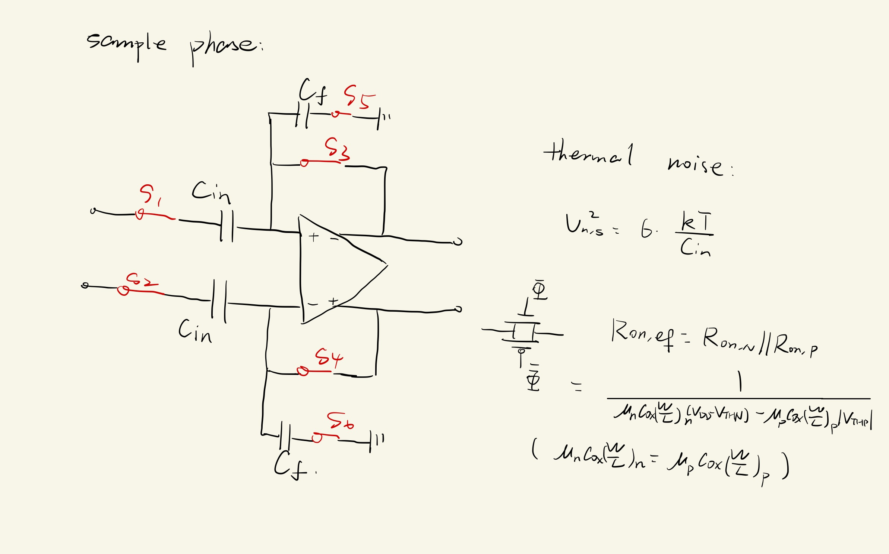
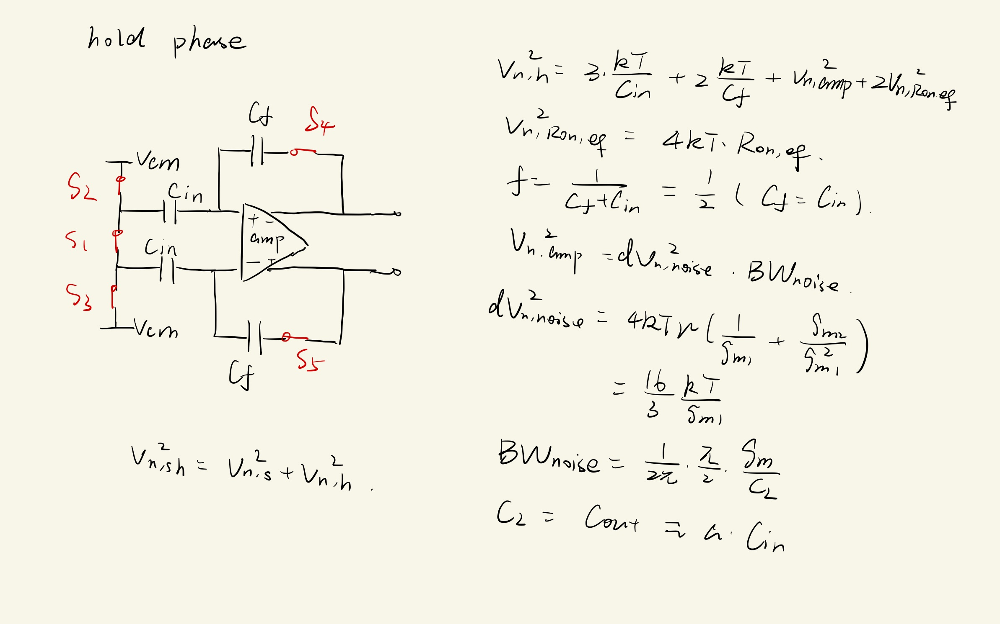
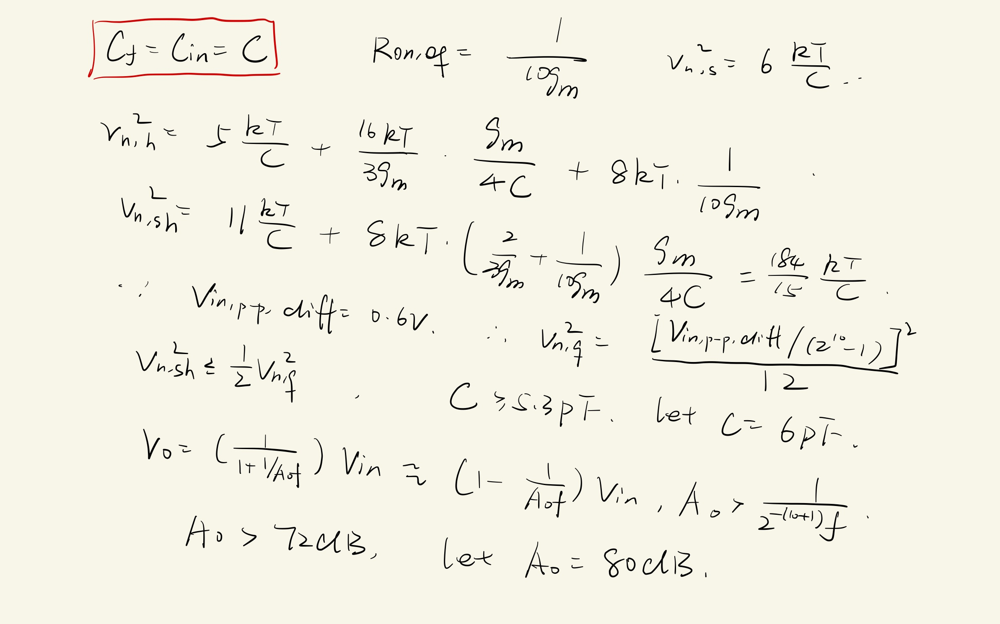
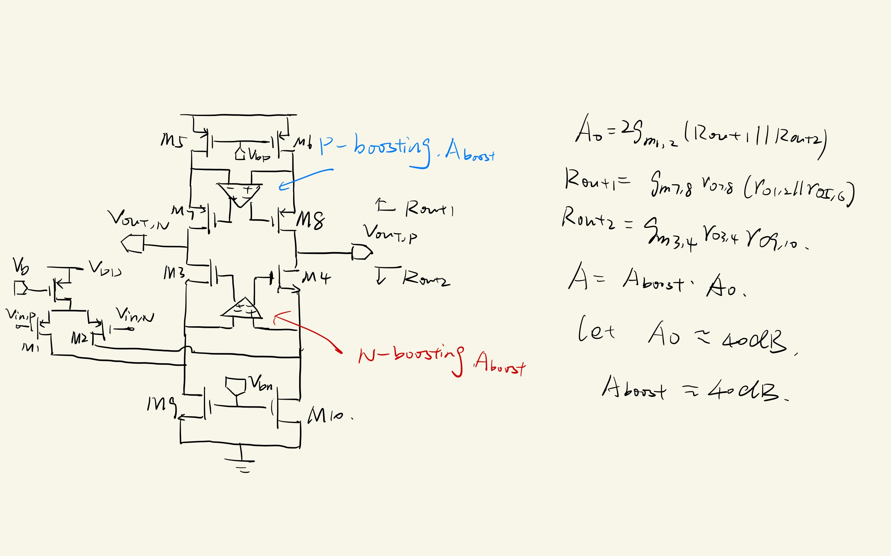
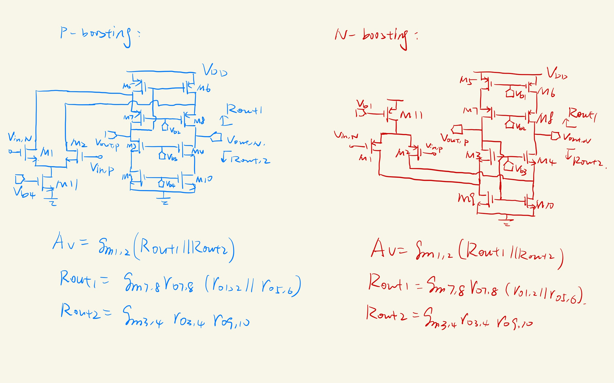

The following figure demonstrates the equivalent circuit and the thermal noise of the sample phase.

There are six swichtes, each of them has a thermal noise of $kT/C$, so the overall thermal noise is $v_{n,s}^{2}=6\frac{kT}{C_{in}}$. One chooses the transmission gates as the switches, so the equivalent resistance is $R_{on, eq}=\frac{1}{\mu_{n}C_{ox}(W/L)_{N}(V_{DD}-V_{THN})-\mu_{p}C_{ox}(W/L)_{P}\vert V_{THP}\vert}$. Here, one assumes $\mu_{n}C_{ox}(W/L)_{N}=\mu_{p}C_{ox}(W/L)_{P}$.
Hold Phase
The following figure elaborates the equivalent circuit and the thermal noise of the hold phase.

One assumes $C_{f}=C_{in}$, so the feedback cofficient of the switched-capacitor circuit is $f=\frac{1}{C_{f}+C_{in}}=1/2$. For long channel devices, $\gamma=2/3$, so if one assumes the load transistor has the same $g_{m}$ with the input transistor, the thermal noise $dv_{n,noise}^{2}=\frac{16kT}{3g_{m}}$. The bandwith of the noise is $\frac{g_{m}}{4C_{L}}$, where the load capacitance $C_{L}=a C_{in}$ (one ignores the input parasitic capacitance $C_{p}$). Here, $a$ is a cofficient related to the speed of the circuit (one assumes $a=1$). The larger the $W/L$ of the input transistor, the larger the $GBW=g_{m}/C_{L}$. Apparently, $R_{on, eq}$ and $C_{in}$ contributes a pole $R_{on,eq}C_{in}$, one assumes $R_{on,eq}C_{in}\le \frac{1}{10}\frac{C_{L}}{g_{m}}$.
The following figure illustrates the choice of the capacitance (at 300K, i.e. room temperature) and the magnitude of the direct-current gain of the amplifier.

One assumes the overdrive voltage $V_{eff}=V_{DSAT}=0.2V$ and $t_{setup}=-\ln\left(\frac{1}{2^{10}\cdot 4}\right)\tau$ where $\tau=R_{on, eq}C$. As $R_{on, eq}=\frac{1}{10g_{m}}$ and $g_{m}=\frac{2I_{SS}}{V_{DSAT}}$, so $2I_{SS}=1\text{mA}$ and $GBW=\frac{1}{2\pi}\frac{g_{m}}{C_{L}}=0.83\text{GHz}$.
One chooses the following structure to meet the demand of 80dB direct-current gain.

One chooses the folded cascode OPAMP for the auxiliary amplifiers.

Because one has not found a 65nm PDK yet, so it is hard for one to calculate the accurate sizes of the MOSFETs. However, one can know that $g_{m1,2}=\frac{2I_{SS}}{V_{DSAT}}$, so one can work out the sizes of M1 and M2 by $g_{m}=\sqrt{2\mu_{p}C_{ox}\left(\frac{W}{L}\right)_{1,2}I_{D}}$. Similarly, one can figure out the sizes of other MOSFETs by $\left(\frac{W}{L}\right)=\frac{I_{D}}{\mu C_{ox}V_{eff}^{2}}$.
Conclusion
As von Neumann’s celebrated quotes, “Young man, in mathematics you don’t understand things. You just get used to them.” In learning the design of analog circuits, one also begins with imitating others' works, and finally figures out one’s own designs.